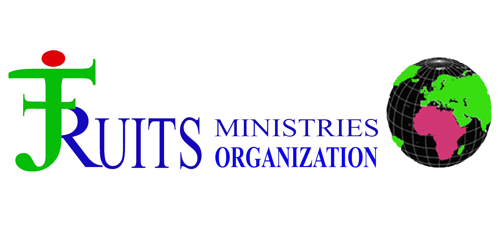

|  |
WElCOME TO FRUITS MINISTRIES
BACKGROUND
Fruits Ministries is a faith based non-govermental and non-profit organization,founded in 2006,to contribute to national development and social progress by primarily empowering women,children and youth to become productive nation builders through education and agriculture related activities / programs and or other initiatives.
It is an indigenous mission organization actively operating in Kapoeta since 2006. The ministry was launched in kapoeta East in Lolim Boma. We believe the church has a mandate to build a nation that is blessed and is a blessing to nations of the world.The church core programmes forms the bases of the nation building core values and it is these values that transforms citizens into nation builders.
It is an indigenous mission organization actively operating in Kapoeta since 2006. The ministry was launched in kapoeta East in Lolim Boma. We believe the church has a mandate to build a nation that is blessed and is a blessing to nations of the world.The church core programmes forms the bases of the nation building core values and it is these values that transforms citizens into nation builders.
OUR VISION
Planting and stimulating churches wholistically to help them keep focus on making and multiplying disciples.
OUR MISSION
Mainstreaming communities,especially the vulnerables by providing protection and care through children home,food,education and health services.
OUR GOALS
To see peace,justice and righteousness of God reign in every transformed community that worship the Lord in spirit and truth.
OUR VALUES
- Courage and Patience
- Stewardship
- Excellence
- Unity
- Collaboration
- Integrity
OUR OBJECTIVES
- To provide and preserve the use of skills and assets which can prevent households and individuals from slipping into poverty by supporting themselves.
- To help increase access to crucial primary health care by reducing barriers such as cost,distance and language for the patients.
- To provide a warm nurturing enviroment for the vulnerable children,where they can build resilience. The home targets childrens from varoius communities.
- To provide children with opportunities to acquire literacy,numeracy,creativity and communication skills for logical decision making.
- To promote peacefull co-existance among communities using modern technologies and conferences.
DISCIPLESHIP

THEMATIC PROGRAMME
- Health
- Child Protection
- WASH
- Food Security and Livelihood
- Media
- Education
- Technical Vocational Education and Training (TVET)
- Evangelism and Discipleship
- Emergency Response and Preparedness
- Women Empowerment
- Peace Building and Conflict Resolution